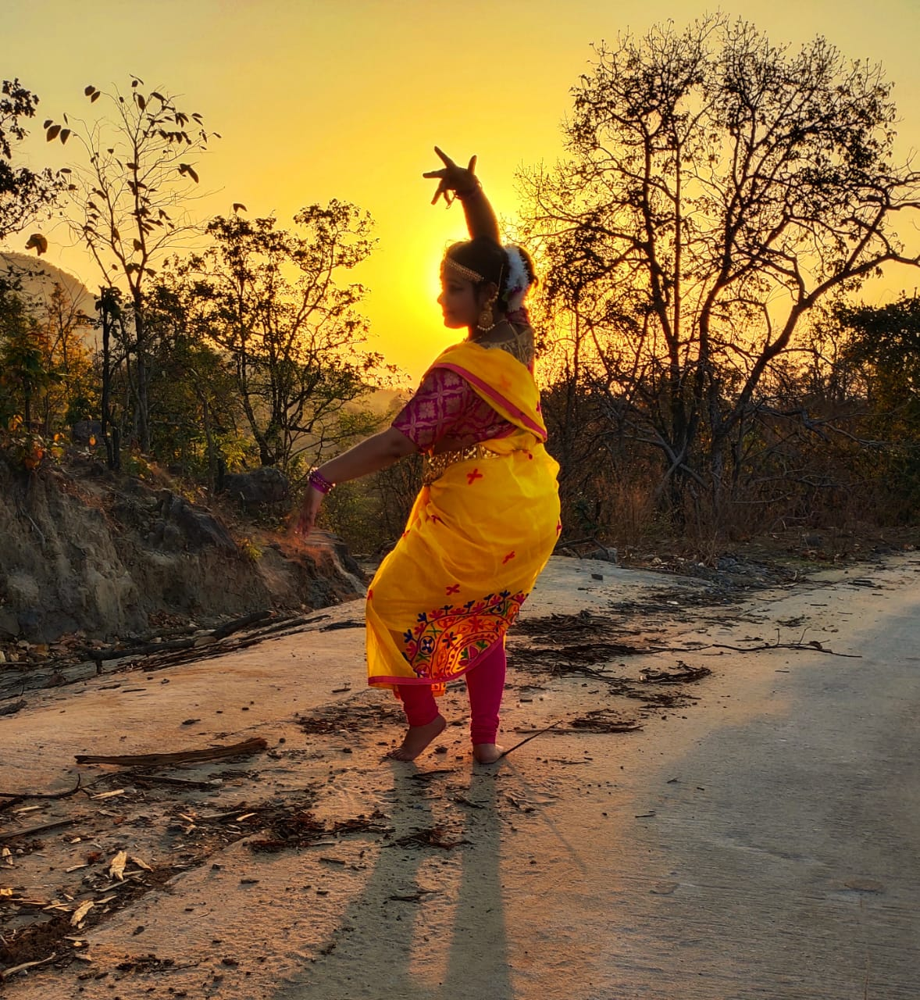

move your feet with every tune of music
ABOUT US
Hey Everyone, we welcome you all to the Dance Department of IN4MALS where we all are a family more than being a society only.We enjoy the steps more than dance and we focus on group development as well as individual perticipation. Here in our department we focus that all the members can develop their skills and show it to the world. You'll try and we will help you providing a stage to perform. Here you'll not only perform but will also feel every beat of dance and enjoy it. As mentioned before we work as a family, so it is our prime focus that all the members are bonded together and work together. Apart from formal talks we are ready to be a part of your happiness and pain, hence we'll have fun sessions where you all will enjoy and make strong bonds of friendship with each other. You can learn new skills from others as well as teach your skills to others so that we can grow together. Here we perform Classical, Bharatnatyam, Hip Hop, Freestyle, Bollywood and many more. We are fully sure that you'll enjoy each and every moment here. Do you know the best part here!! We don't force you for something, you can freely take part in your desired types of dance but we do push you to be better one day by day. Here you can gain new skills & can modify your own steps of dance too. Our members are very tallented & hard-working. With the help of our society they have already improved their skills. So we welcome you all to our society and will look forward for your joining. Get ready to explore and get limitless opportunities, high hopes, unbounded stage and promising friendship.
OUR DANCE STUDIO
MEET OUR DANCERS

Suparna Roy Gupta
Hi, I'm Suparna Roy Gupta, the dance coordinator of IN4MALS society. I began my dance career at DR. RUMPA SINHA'S NATYALAYA from the age of 2yr. I am doing a junior diploma course in Bharatnatyam also from Prayag Sangeet Vishwavidyalaya. I have competed in many national level and state level competitions. I am skilled in contemporary, semi-classical and bollywood dance. Recently I'm co-ordinating the dance group of IN4MALS. I try to guide & motivate all the members in our dance society. What I think about Dance is ,it is a form of expression that brings people together, allows them to be creative in new ways, and is a fantastic way to escape the stresses and cares of everyday life. When I dance I am completely get released from the preoccupations and stresses of day to day life. I enjoy growth, and performing is a wonderful catalyst in which this can happen.

Adyasha Mohanty
Hi, I'm Adyasha Mohanty. I am a professionally trained dancer and started my journey in dancing at the age of 5 years. Ever Since I watched bollywood actors dancing in movies, I wanted to do that. All thanks to my parents who supported me and started giving me professional training since I was 4 years old. It's been more than 12-13 years since I am performing. I am professionally trained in Odissi but also perform in bollywood, semiclassical forms as well. I have competed in many national and international level programs as well. I'm here in IN4MALS members of our dance team since 1-2 months & already took part in 2 projects. IN4MALS society has already given me the chance to be a part of two projects which were done online because of the pandemic. I expect, as soon as things get normal, we'd meet offline, we will start performing on stage and my skills will be even more enhanced.

Oshmita Sarkar
Hi, I'm Oshmita Sarkar. I'm a second year student of CSE. I have a specialization in bharatanatyam, folk, fusion and regional dances. I have participated in various competitions of the IIT's and have made it to the finals. I also took part in the KORUS fest of KIIT and have been a part of various local projects of In4mals for its social media page and YouTube channel. For me, dance is like a spiritual purification. Every move, every beat creates an aura of positivity within me. I have been a passionate dancer since childhood and still continue the learning process as I believe that learning must never stop. In4mals has provided me with a platform to showcase my individuality as well as the tallents that I have achieved from continuous practices. I can firmly affirm that being a part of this society has helped me grow as a dancer and unleashed a new being within me.

Satyajeet Das
Hi, My name is Styajeet Das. I am now in second year from CSSE branch. I am very much passionate in dancing & love to dance. I am not at all a professionally trained dancer. I've been performing on the stage since class 8. I usually use to do Hip Hop, Bollywood or Freestyle dancing. I've joined our society few months ago but have already taken part in few projects of dance and performed in various competitions with the help of that wide platform the IN4MALS provided me. My love for dance has brought me here. The feeling that the steps of dance gave me is beyond my imagination and cannot be described in words. IN4MALS gave me the perfect stage and opportunity to rise. It gave me the spark to continue my Dance after a break of two years I'm eger to learn more and improve my skills here.